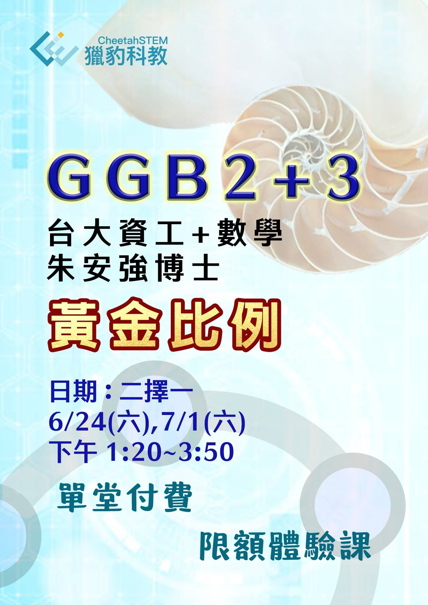

618 黃金比例 ，GGB2+3單堂限額付費體驗課
文 朱安強博士
618 對學數學的人來說，不是購物節，而是神奇的黃金比例。這是數學科普中最熱門的元素，在藝術、建築、自然現象中都可看到他。
要了解黃金比例，首先就要從數學的相似形，並可由二元一次方程式 x^2-x-1=0 來得到其數值 (1+sqrt(5))/2 大約為 1.6180339887… ，更神奇的是這竟然與費氏數列 1,1,2,3,5,8,13,... 有關。
一個主題竟串起很多數學元素的關聯。對於小學生，想快速了解這個關鍵元素，那通過 Geogebra 是很好的切入點。
【單次專題課】
趁 618 的到來，獵豹推出單堂 Geogebra 專題課。
讓未接觸過 Geogebra 的同學能快速入門 Geogebra ，並認識黃金比例！
2.5hr 互動體驗，單堂講座課 $1618 ，
可選 6/24(六),7/1(六) 13:20~15:50 兩場次擇一。
限額開放 6 位給未報名GGB2,3正式課的人，並可折抵 GGB2,3 學費！
【學生作品與家長評價】
最後分享 小四學員 宥羽 （卓越盃全國第六名)
用 Geogebra 創作黃金比例的作品合集：
宥羽爸對此門課的評價：
歡迎參加朱安強博士GGB2+3
『GGB1、GGB2+3、課程 開跑! 』
